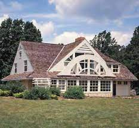

152. House in New Castle County. Delaware, U.S. Robert Venturi, John Rauch, and Denise Scott Brown (architects). 1978–1983 C.E. Wood frame and stucco.
- Form
- The facade contains an arch inside a pediment form
- A squat, bulging Doric colonnade is asymmetrically placed
- The columns are actually flat rather than the traditionally rounds forms
- The drainpipe at the left bisects the outermost column
- The flattened forms reflect a craftman's hand in curved, cutting elements
- Function
- The house was designed for a family of three
- For the wife, a musician, a music room was created with two pianos, an organ, and a harpsichord
- For the husband, a bird-watcher, large windows were installed facing the woods
- Context
- Postmodern mix of historical styles
- Rural lcoation in low hills, grassy fields of Delaware
- Venturi's comment on the International style: "Less is a bone